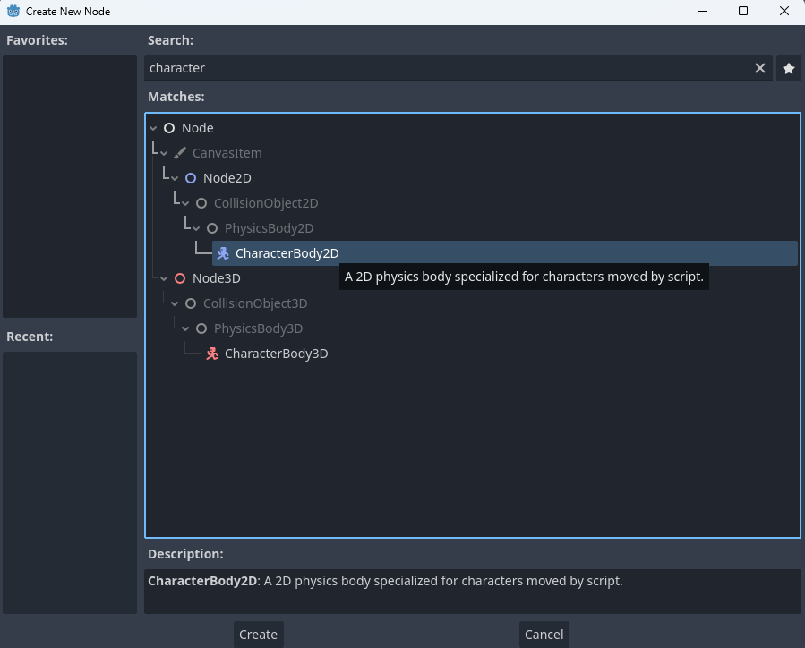
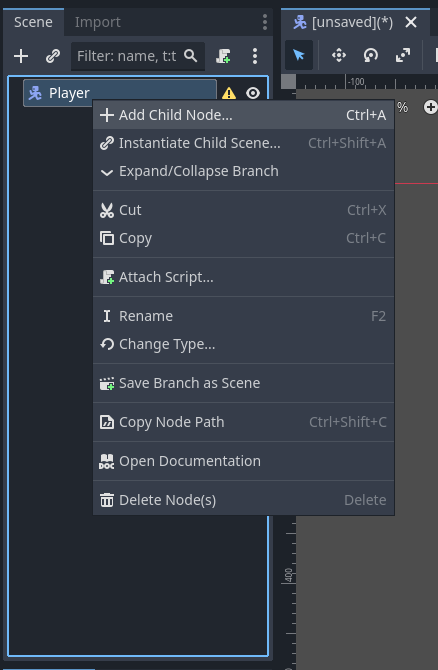

Creating the Player Scene
This page will walk through setting up the player scene with physics, animations and a player camera!
Choosing a Root Node
Continuing from our last tutorial, we should have a blank scene. In our scene tree Godot will be requesting we choose a Root Node.

A root node is the node from which all other nodes in a scene are descendants of. To keep with the tree metaphor, the root node is the roots of the tree that all the other nodes 'branch' off from. The root node provides the most basic functionality of a scene. For our player we will need to select a CharacterBody2D node. You may notice that is not an option in the scene tree right now, so we must select the Other Node option. This will bring up a menu to select from any of Godot's node types.
You can use the serach bar at the top of the new node menu to quickly find nodes!
The root node for a scene also provides the name the scene will have when it is put into another scene. Due to this is is generally a good idea to rename your root node. You can do this by right clicking the node and selecting Rename. Lets rename our CharacterBody2D to Player.
To check out more details on node types, you can always right click a node in the scene tree and select 'Open Documentation'. Or to see all your options check out Godot's official documentation Here
Adding Sprites and Animations
You may notice that our scene in the viewport is still empty. This is because we haven't added any visuals to our player! In order to fix this we need to first add a new AnimatedSprite2D node as a child of our Player (CharacterBody2D) node by right clicking the Player node and selecting Add Child Node.
